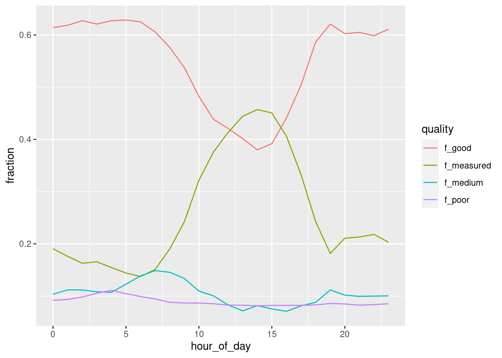
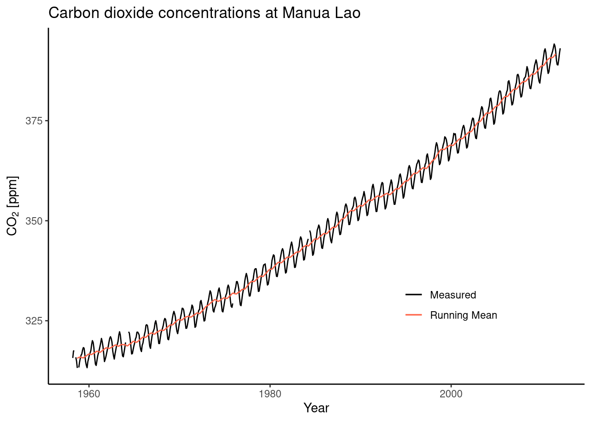

A Solutions
A.1 Getting Started
Dimensions of a circle
- Given the radius of a circle write a few lines of code that calculates its area and its circumference. Run your code with different values assigned of the radius.
radius <- 1
area <- pi * radius^2
circum <- 2 * pi * radius- Print the solution as text.
print(paste("Radius:", radius, " Circumference:", circum))## [1] "Radius: 1 Circumference: 6.28318530717959"Sequence of numbers
Generate a sequence of numbers from 0 and \(\pi\) as a vector with length 5.
seq(0, pi, length.out = 5)## [1] 0.0000000 0.7853982 1.5707963 2.3561945 3.1415927Gauss sum
Rumors have it that young Carl Friedrich Gauss was asked in primary school to calculate the sum of all natural numbers between 1 and 100. He did it in his head in no time. We’re very likely not as intelligent as young Gauss. But we have R. What’s the solution?
sum(1:100)## [1] 5050Gauss calculated the sum with a trick. The sum of 100 and 1 is 101. The sum of 99 and 2 is 101. You do this 50 times, and you get \(50 \times 101\). Demonstrate Gauss’ trick with vectors in R.
vec_a <- 1:50
vec_b <- 100:51
vec_c <- vec_a + vec_b
# each element is 101
vec_c## [1] 101 101 101 101 101 101 101 101 101 101 101 101 101 101 101 101 101 101 101
## [20] 101 101 101 101 101 101 101 101 101 101 101 101 101 101 101 101 101 101 101
## [39] 101 101 101 101 101 101 101 101 101 101 101 101# the length of vectors is fifty. 50 * 101
sum(vec_c)## [1] 5050Magic trick algorithm
Define a variable named x that contains an integer value and perform the following operations in sequence:
- Redefine
xby adding 1. - Double the resulting number, over-writing
x. - Add 4 to
xand save the result asx. - Redefine
xas half of the previous value ofx. - Subtract the originally chosen arbitrary number from
x.
Print x. Restart the algorithm defined above by choosing a new arbitrary natural number.
x <- -999 # arbitrary integer
x_save <- x # save for the last step
x <- x + 1
x <- x * 2
x <- x + 4
x <- x / 2
x - x_save## [1] 3Vectors
Print the object datasets::rivers and consult the manual of this object.
- What is the class of the object?
- What is the length of the object?
- Calculate the mean, median, minimum, maximum, and the 33%-quantile across all values.
class(datasets::rivers)## [1] "numeric"length(datasets::rivers)## [1] 141mean(datasets::rivers)## [1] 591.1844quantile(datasets::rivers, probs = 0.33)## 33%
## 342Data frames
Print the object datasets::quakes and consult the manual of this object.
- Determine the dimensions of the data frame using the respective function in R.
- Extract the vector of values in the data frame that contain information about the Richter Magnitude.
- Determine the value largest value in the vector of event magnitudes.
- Determine the geographic position of the epicenter of the largest event.
dim(datasets::quakes)## [1] 1000 5vec <- datasets::quakes$mag
max(vec)## [1] 6.4idx <- which.max(vec) # index of largest value
# geographic positions defined by longitude and latitude (columns long and lat)
datasets::quakes$long[idx]## [1] 167.62datasets::quakes$lat[idx]## [1] -15.56Workspace
Create a new R project and create sub-directories in a meaningful way (as described in this Chapter). Create an RMarkdown file in your new project which implements your solutions to above exercises. Give the file a title, implement some structure in the document, and write some text explaining what your code does.
No solutions provided because part of the final report.
A.2 Programming primers
Gauss variations
# for-loop to compute sum from 1 - 100
sum <- 0
for (i in 1:100){
sum <- sum + i # for-loop iterating from 1 to 100
}
print(sum)## [1] 5050# while-loop to compute sum from 1 - 100
loop_status <- TRUE
counter <- 0
sum <- 0
while (loop_status) { # while-loop is repeated as long as loop_status is true
counter <- counter + 1
sum <- sum + counter
if (counter == 100) loop_status <- FALSE
}
print(sum)## [1] 5050# Initiate sum variable
sum <- 0
# Go through loop from 1 to 100
for (i in seq(100)) {
# Check if the current number a muliple of three and seven
# The modulo operator '%%' returns the remainder of a division
if (i %% 3 == 0 && i %% 7 == 0 ) {
sum <- sum + i
}
}
print(paste0("The sum of multiples of 3 and 7 within 1-100 is: ", sum))## [1] "The sum of multiples of 3 and 7 within 1-100 is: 210"Nested loops
mymat <- matrix(c(6, 7, 3, NA, 15, 6, 7,
NA, 9, 12, 6, 11, NA, 3,
9, 4, 7, 3, 21, NA, 6,
rep(NA, 7)),
nrow = 4, byrow = TRUE)
myvec <- c(8, 4, 12, 9, 15, 6)# Loop over the rows in `mymat`.
for (i in 1:nrow(mymat)){
# Loop over the columns in `mymat`.
for (j in 1:ncol(mymat)){
# Check if current value is missing, if so overwrite with max in 'myvec'
if (is.na(mymat[i,j])){
mymat[i,j] <- max(myvec)
}
}
myvec <- myvec[-which.max(myvec)] # update the vector removing the maximum value
}
mymat## [,1] [,2] [,3] [,4] [,5] [,6] [,7]
## [1,] 6 7 3 15 15 6 7
## [2,] 12 9 12 6 11 12 3
## [3,] 9 4 7 3 21 9 6
## [4,] 8 8 8 8 8 8 8Interpolation
# Set up vector as required in the exercise
vec <- rep(NA, 100) # initialize vector of length 100 with NA
vec[1:25] <- 6 # populate first 25 elements of 'vec' with 6.
vec[66:100] <- -20 # populate elements 66:100 with -20.
# Determine index of last non-missing value before gap
last_non_na <- 1
while (!is.na(vec[last_non_na+1])) last_non_na <- last_non_na + 1
# determine index of first non-missing value after gap
first_non_na <- last_non_na + 1
while (is.na(vec[first_non_na])) first_non_na <- first_non_na + 1
# Get the increment that is needed for interpolation
last_value <- vec[last_non_na] # Last non-NA value
first_value <- vec[first_non_na] # First non-NA value
delta <- (last_value - first_value) / (last_non_na - first_non_na) # Change in y over change in x
# fill missing values incrementally
for (i in 2:length(vec)){
if (is.na(vec[i])) vec[i] <- vec[i-1] + delta
}
plot(vec)
# or short using the approx() function:
vec <- rep(NA, 100) # initialize vector of length 100 with NA
vec[1:25] <- 6 # populate first 25 elements of 'vec' with 6.
vec[66:100] <- -20 # populate elements 66:100 with -20.
vec <- approx(1:100, vec, xout = 1:100)
plot(vec)
A.3 Data Wrangling
Aggregation of data in tidy style
# Load the half hourly fluxed
half_hourly_fluxes <- readr::read_csv("data/FLX_CH-Lae_FLUXNET2015_FULLSET_HH_2004-2006.csv") |>
# Select only variables that we are interested in
dplyr::select(
starts_with("TIMESTAMP"),
ends_with("_F"),
GPP_NT_VUT_REF,
NEE_VUT_REF_QC,
-starts_with("SWC_F_MDS_"),
-contains("JSB")
)# Aggregate half hourly datafluxes to daily level
daily_fluxes_vpd <-
half_hourly_fluxes |>
# Clean the datetime objects
dplyr::mutate(date_time = lubridate::ymd_hm(TIMESTAMP_START),
date = lubridate::date(date_time)) |>
# Aggregate to daily scale
dplyr::group_by(date) |>
# Get metrics for VPD_F
dplyr::summarise(mean = mean(VPD_F), # Get the mean
median = median(VPD_F), # Get the median
min = min(VPD_F), # Get the mininum
max = max(VPD_F), # Get the maximum
sd = sd(VPD_F), # Get the standard deviation
q33 = quantile(VPD_F, 0.33) # Get the 33% quantile
)Let’s have a look at the statistics of vapor pressure deficit for the first six days of the year:
daily_fluxes_vpd |>
head() |>
knitr::kable( # This function gives a nice table output for html renderings
digits = 3,
caption = "Statistics for vapor pressure deficit when aggregating half hourly fluxes to daily fluxes."
)| date | mean | median | min | max | sd | q33 |
|---|---|---|---|---|---|---|
| 2004-01-01 | 0.865 | 0.699 | 0.558 | 1.586 | 0.309 | 0.634 |
| 2004-01-02 | 0.911 | 0.833 | 0.601 | 1.294 | 0.211 | 0.787 |
| 2004-01-03 | 1.032 | 0.933 | 0.769 | 1.558 | 0.254 | 0.816 |
| 2004-01-04 | 1.123 | 0.976 | 0.788 | 1.798 | 0.317 | 0.935 |
| 2004-01-05 | 0.962 | 0.919 | 0.798 | 1.227 | 0.124 | 0.894 |
| 2004-01-06 | 1.329 | 1.158 | 0.932 | 2.399 | 0.394 | 1.088 |
Temporal pattern of gap-filled data
# Create the two with only measured and only gap-filled data
# using `half_hourly_fluxes` as defined above
high_quality <- half_hourly_fluxes |> dplyr::filter(NEE_VUT_REF_QC == 0)
low_quality <- half_hourly_fluxes |> dplyr::filter(NEE_VUT_REF_QC != 0)
# Calculate mean
mean_full_df <- mean(half_hourly_fluxes$GPP_NT_VUT_REF) |> round(2)
mean_high_quality <- mean(high_quality$GPP_NT_VUT_REF) |> round(2)
mean_low_quality <- mean(low_quality$GPP_NT_VUT_REF) |> round(2)
cat("\n GPP mean values of: \n full --- low quality --- high quality datasets \n",
mean_full_df, "---", mean_low_quality, "---", mean_high_quality)##
## GPP mean values of:
## full --- low quality --- high quality datasets
## 4.2 --- 3.06 --- 7.51We can see that the gap-filled data has a lower mean value than the actually measured data. Assuming that the gap-filling routine was robust and does not give arbitrary values, a lower mean value suggest that this data is coming from days or hours with low assimilation rates. This could be either from transitional seasons like spring and fall, or from times with low sun irradiance from dawn to sunrise.
Using the clean functional programming approach (loop is below):
# Relationship between data quality and time
# Save hour of day (hod) in separate variable
counts_per_hod <-
half_hourly_fluxes |>
# Turn numeric time into time-object
dplyr::mutate(date = lubridate::ymd_hm(TIMESTAMP_START),
hod = lubridate::hour(date)) |>
# Group by hour of the day, creating a nested dataframe per hour of day
dplyr::group_by(hod) |>
tidyr::nest() |>
# For each nested dataframe, filter for gap-filled or not gap-filled data
# and count the rows of the remaining dataframe. This gives the counts of measured
# and gap-filled entires.
dplyr::mutate(measured = purrr::map_dbl(data, ~. |> dplyr::filter(NEE_VUT_REF_QC == 0) |> nrow()),
gapfilled = purrr::map_dbl(data, ~. |> dplyr::filter(NEE_VUT_REF_QC != 0) |> nrow())) |>
# Drop unnecessary variables
dplyr::select(-data)
head(counts_per_hod)## # A tibble: 6 × 3
## # Groups: hod [6]
## hod measured gapfilled
## <int> <dbl> <dbl>
## 1 0 418 1774
## 2 1 386 1806
## 3 2 357 1835
## 4 3 363 1829
## 5 4 339 1853
## 6 5 316 1876Instead of using the functional programming approach, you could also make a loop as such:
hh_fluxes_loop <-
half_hourly_fluxes |>
dplyr::mutate(date = lubridate::ymd_hm(TIMESTAMP_START),
hod = lubridate::hour(date))
# Create an emtpy tibble to which data is to be saved
counts_per_hod <- tidyr::tibble()
# Loop going through each hour of the day
for (h in 0:23) {
# Output current hour, the loop is working on:
cat("\n Working on hour: ", h) # The '\n' adds a newline, to keep the output nice
# Set counters that start from 0 for every new hour
count_measured <- 0
count_gapfill <- 0
# Loop going through each row in hh_fluxes_loop
for (row in 1:nrow(hh_fluxes_loop)) {
# First Check: Is the current row ifrom the hour of the day that is looped?
if (hh_fluxes_loop$hod[row] == h) {
# Second check: Is current row actually measured data?
# If yes, add 1 to count_measured, else add 1 to count_gapfill
if (hh_fluxes_loop$NEE_VUT_REF_QC[row] == 0) {
count_measured <- count_measured + 1
} else {
count_gapfill <- count_gapfill + 1
}
}
}
# Add hod counts to final dataframe
counts_per_hod <-
rbind(
counts_per_hod,
tidyr::tibble(hod = h,
measured = count_measured,
gapfilled = count_gapfill)
)
}##
## Working on hour: 0
## Working on hour: 1
## Working on hour: 2
## Working on hour: 3
## Working on hour: 4
## Working on hour: 5
## Working on hour: 6
## Working on hour: 7
## Working on hour: 8
## Working on hour: 9
## Working on hour: 10
## Working on hour: 11
## Working on hour: 12
## Working on hour: 13
## Working on hour: 14
## Working on hour: 15
## Working on hour: 16
## Working on hour: 17
## Working on hour: 18
## Working on hour: 19
## Working on hour: 20
## Working on hour: 21
## Working on hour: 22
## Working on hour: 23head(counts_per_hod)## # A tibble: 6 × 3
## hod measured gapfilled
## <int> <dbl> <dbl>
## 1 0 418 1774
## 2 1 386 1806
## 3 2 357 1835
## 4 3 363 1829
## 5 4 339 1853
## 6 5 316 1876Note: In the loop above, there is the command
cat()which outputs its arguments in a minimal way. Here we use cat to inform us on what hour of the day the loop is currently working on. This can be helpful to debug larger loops or to see progress in computationally expensive loops.
# Let's visualise the data!
# Using base R:
plot(counts_per_hod$hod,
counts_per_hod$measured,
type = "h", # Make a histogram-like plot
main = "Counts for gapfilled data", # Give plot a title
xlab = "Hour of Day", # Give x-axis a title
ylab = "Number of data points" # Give y-axis a title
)
plot(counts_per_hod$hod,
counts_per_hod$gapfilled,
type = "h",
main = "Counts for measured data",
xlab = "Hour of Day",
ylab = "Number of data points"
)
# Using {ggplot2}:
counts_per_hod |>
# First make pivot longer to have the qc criteria as a variable instead of variables
tidyr::pivot_longer(cols = c("measured", "gapfilled"),
names_to = "qc",
values_to = "value") |>
dplyr::mutate(qc = as.factor(qc)) |>
# Pipe into ggplot
ggplot() +
aes(x = hod,
y = value,
fill = qc) + # Define axis and colors
geom_col(width = 0.75) + # Add columns
facet_wrap(~qc, # Make a facet of factor levels
labeller = as_labeller(c( # Add labels for subplots
"measured" = "Measured Data",
"gapfilled" = "Gap-filled Data"
))) +
# Style the plot
labs(title = "Temporal patterns of gap-filled GPP data",# Add plot labels
x = "Hour of Day",
y = "Number of data points") +
scale_fill_brewer( # Pick nice color theme
"Data Source", # Give legend a title
palette = "Dark2", # Colorblind-friendly palette
labels = c( # Specify labels of legend
"Measured",
"Gap-filled")
) +
theme_classic() + # Pick a nice theme
theme(plot.title = element_text(face = "bold")) # Make title bold
Our inference above seems to be correct! Data from dawn to sunrise are more often gap-filled than data from when the sun is shining. Generally, small changes are more difficult to measure than large changes. For example, a change of in GPP of 10 \(\mu\)mol CO\(_2\) m\(^{-1}\) s\(^{-1}\) is much harder to measure than a change of 0.1 \(\mu\)mol CO\(_2\) m\(^{-1}\) s\(^{-1}\). When there is less light, there is less photosynthesis and sensors have higher uncertainties in detecting small changes in CO\(_2\) concentrations. Thus, there is more gap-filled data, when there is little photosynthesis happening. You can repeat this exercise but using the month of the year instead of the hour of the day - you will find the same pattern!
A.4 Data Visualisation
Identifying Outliers
# Read and wrangle data
half_hourly_fluxes <- readr::read_csv("data/FLX_CH-Lae_FLUXNET2015_FULLSET_HH_2004-2006.csv") |>
# interpret -9999 as missing value
dplyr::na_if(-9999) |>
# interpret all variables starting with TIMESTAMP as a date-time object
dplyr::mutate_at(vars(starts_with("TIMESTAMP_")), lubridate::ymd_hm)
# aggregate to daily
daily_fluxes <- half_hourly_fluxes |>
# create a date-only object
dplyr::mutate(date = lubridate::as_date(TIMESTAMP_START)) |>
# aggregate
dplyr::group_by(date) |>
dplyr::summarise(GPP_NT_VUT_REF = mean(GPP_NT_VUT_REF, na.rm = TRUE),
PPFD_IN = mean(PPFD_IN, na.rm = TRUE),
.groups = 'drop' # not mandatory
)# fit linear regression
linmod <- lm(GPP_NT_VUT_REF ~ PPFD_IN, data = daily_fluxes)
linmod##
## Call:
## lm(formula = GPP_NT_VUT_REF ~ PPFD_IN, data = daily_fluxes)
##
## Coefficients:
## (Intercept) PPFD_IN
## 0.9173 0.0118# get box plot statistics for determining "outlying" points
out_boxplot <- boxplot.stats(linmod$residuals)
# record the row numbers of outlying points based on the output list element 'out'
# row numbers are the names of elements in out_boxplot$out, provided as strings.
# convert them to integers.
outlier_index <- out_boxplot$out |> names() |> as.integer()# Label outliers
# In base-R, this could be done as
daily_fluxes$is_outlier <- FALSE
daily_fluxes$is_outlier[outlier_index] <- TRUE
# In tidyverse style:
daily_fluxes <- daily_fluxes |>
dplyr::mutate(rownumber = dplyr::row_number()) |> # could also do: dplyr::mutate(rownumber = 1:nrow(.))
dplyr::mutate(is_outlier = ifelse(rownumber %in% outlier_index, TRUE, FALSE))# Create scatterplot
daily_fluxes |>
tidyr::drop_na() |>
ggplot() +
# Set variables to use for axes and filling of plots
aes(x = PPFD_IN,
y = GPP_NT_VUT_REF,
fill = is_outlier) +
geom_point(size = 2, # Increase size of points
shape = 21) + # Shape 21 has a "fill" and "color" property
# fill refers to the shape itself
# color refers to the border around the shape
theme_classic() + # Pick a simple theme
scale_fill_brewer( # Pick a nice color scheme
"Outlier?", # Set title of legend
palette = "Dark2", # Pick a nice palette of the scheme
labels = c("No", "Yes") # Add labels to the legend
) +
labs(title = "Outliers in GPP ~ PPFD",
y = expression("Gross primary production [gC m"^-2 * "s"^-1 * "]"),
x = expression("Photosynthetic photon flux density [" * mu * "mol" ~ m^-2 ~ s^-1 * "]"))
What do we see in this plot? We see that the orange points, that is the outliers, actually fall outside the main point cloud of green points. The distribution of these outliers seems without systematic pattern or deviation. Nonetheless, it is good practice to go a step further and look at these data points in detail to find out whether they should be removed or not in your analysis. In later Chapters you will learn more on what disproportionate role outliers can play and how they may affect your statistical model and analysis.
Diurnal and seasonal cycles
# Data wrangling
fluxes_per_hod_doy <-
half_hourly_fluxes |> # df from previous exercise
dplyr::mutate(
hour_day = lubridate::hour(TIMESTAMP_START), # Save the hour of the day
day_year = lubridate::yday(TIMESTAMP_START)) |> # Save the day of the year
dplyr::group_by(hour_day, day_year) |> # Group by HoD and DoY at once
dplyr::summarise(gpp = mean(GPP_NT_VUT_REF, na.rm = TRUE)) # Take mean for GPP, ignore `NA`# Create a standard raster plot
fluxes_per_hod_doy |>
ggplot() +
aes(x = hour_day, y = day_year, fill = gpp) +
geom_raster()
# Make raster plot publishable - This is up to your judgement. Below is an example.
fluxes_per_hod_doy |>
# Specify aesthetics
ggplot(aes(x = hour_day,
y = day_year,
fill = gpp)) + # The 'filling' of the raster
geom_raster() +
# Use a color scale that works also for color-blind people
scale_fill_viridis_c(option = "magma") +
# Change theme and layout a bit
theme(
plot.title = element_text(face = "bold", # Make title bold
hjust = 0.5), # Horizontal adjustment of title to
# be in the middle (left: 0, right: 1)
legend.position = "right" # Move legend to bottom
) +
# adjust the aspect ratio of the plotting region
coord_fixed(ratio=0.075) +
# labels of each mapping axis, \n is a line break
labs(title = "Diurnal and seasonal cycle of GPP",
x = "Hour of day",
y = "Day of year",
fill = expression("GPP \n[gC m"^-2 * "s"^-1 * "]: ")) + # Legend title for fill scale
# The '\n' adds a line break
# avoid having a small padding from the lowest values to the end of axes
scale_x_continuous(expand = c(0,0)) +
scale_y_continuous(expand = c(0,0))
Beautiful, isn’t it? We nicely see that on practically all days of the year we have the diurnal cycle of GPP which follows the sun’s cycle. And the throughout a year, we see a rapid increase in GPP in the spring when all trees put out their leaves at once. After a highly productive summer, temperatures drop, sensescence kicks in and GPP gradually drops into its winter low.
Trend in carbon dioxide concentrations
# Read table, set 'header = TRUE' to tell R that the first row are variable names
# You could set 'skip = 70' to skip all metadata, but R detects that automatically
ml_co2 <- read.table("data/co2_monthly_maunaloa.txt",
header = TRUE,
na.strings = '-99.99' # The dataset specifys that these are missing variables
) |>
# To get a good timeseries, we need to get a nice date-time variable first
dplyr::mutate(date = paste(yr, mo, sep = "-") |> lubridate::ym(), # Imprecise but okay
datetime = lubridate::date_decimal(decyr, tz = "UTC")) # Exact second of measurement# Simple plot of the trend
ml_co2 |> ggplot() + geom_line(aes(datetime, co2_avg))
The data looks reasonable. No outliers, no reamining -99.99 values that where not dropped.
# Write the running mean function
running_mean <- function(input_data, # Input vector
box_size # Number of elements over which to average
){
# Create an empty vector of the same length as the input data
output_data <- rep(NA, length(input_data))
# Loop over each position in the vector
for (i in 1:length(input_data)){
# Define start and end of the box to average over
startbox <- i - box_size / 2
endbox <- i + box_size / 2
# Do not take means at the border of the input_data
if (startbox < 1) {
output_data[i] <- NA
} else if (endbox > length(input_data)) {
output_data[i] <- NA
} else {
# Take the mean of values within the box
output_data[i] <- mean(input_data[startbox:endbox],
na.rm = TRUE)
}
}
# Return output_data
return(output_data)
}
ml_co2$co2_rm <- running_mean(ml_co2$co2_avg, 12)# Create a nice plot
ml_co2 |>
ggplot() +
# First plot the measurements
geom_line(aes(datetime, co2_avg, color = "Measured")) +
# Add running mean on top
geom_line(aes(datetime, co2_rm, color = "Running Mean")) +
# Style the plot
theme_classic() +
theme(legend.position = c(0.75, 0.25)) + # Move legend into the plot (c(x, y))
scale_color_manual(
"", # Omit legend title
values = c("black", "tomato"),
labels = c("Measured", "Running Mean")
) +
labs(title = "Carbon dioxide concentrations at Manua Lao",
y = expression("CO"[2] ~ "[ppm]"),
x = "Year")## Warning: Removed 12 rows containing missing values (`geom_line()`).
A.5 Data Variety
Files and file formats
Reading and writing human readable files
The below code shows how to read in the different demo data sets (CSV files). You will note that they all need separate settings, and that a given file extension isn’t necessarily a reflection of the content the file. Inspection of your read in data is therefore key.
# read in the first demo
demo_01 <- read.table(
"https://raw.githubusercontent.com/geco-bern/agds/main/data/demo_1.csv",
sep = ",",
header = TRUE
)
# read in second demo
demo_02 <- read.table(
"https://raw.githubusercontent.com/geco-bern/agds/main/data/demo_2.csv",
sep = " ",
header = TRUE
)
demo_03 <- read.table(
"https://raw.githubusercontent.com/geco-bern/agds/main/data/demo_3.csv",
sep = ";",
comment.char = "|",
header = TRUE,
)All the demo data sets are equal, except for their formatting. We can test if the content is identical by using the identical() function in R.
# compare 1 with 2
identical(demo_01, demo_02)## [1] TRUE# compare 2 with 3
identical(demo_02, demo_03)## [1] TRUE# Given transitive properties, demo_01 is identical to demo_03You can combine the three datasets using the {dplyr} bind_rows() function.
# combining all demo datasets
demo_all <- dplyr::bind_rows(demo_01, demo_02, demo_03)
# writing the data to a temporary CSV file
write.table(
demo_all,
file = file.path(tempdir(), "tmp_csv_file.csv"),
col.names = TRUE,
row.names = FALSE,
sep = ","
)
# or...
write.csv(
demo_all,
file.path(tempdir(), "tmp_csv_file.csv"),
row.names = FALSE
)
# read in the previous CSV file
demo_all_new <-read.table(
file.path(tempdir(), "tmp_csv_file.csv"),
header = TRUE,
sep = ","
)
# writing the data to a JSON file
jsonlite::write_json(demo_all_new, path = "./my_json_file.json")Reading and writing binary files
- It is a NetCDF file
- the {terra} library (see Table xyz)
- Temperature data for Switzerland at noon on 2021-01-01
# read unknown netcdf file using the {terra} library
library(terra)
unkown_netcdf <- terra::rast("https://raw.githubusercontent.com/geco-bern/agds/main/data/some_data.nc")
# print the meta-data by calling the variable
unknown_netcdf
# visually plot the data
terra::plot(unknown_netcdf)# write the data as a geotiff (other options are possible as well in writeRaster)
terra::writeRaster(
unknown_netcdf,
filename = "./test.tif",
overwrite = TRUE
)# read unknown tif file using the {terra} library
library(terra)
unkown_tif <- terra::rast("https://raw.githubusercontent.com/geco-bern/agds/main/data/some_data.tif")
# print the meta-data by calling the variable
unknown_tif
# visually plot the data
terra::plot(unknown_tif)
# Are they exactly the same
terra::plot(unknown_tif - unknown_netcdf)
# or...
identical(unkown_netcdf, unkown_tif)Looks similar to the NetCDF data, however one pixel is different as shown by taking the difference between both datasets.
A.6 Open Science
External data
The project data is stored in one folder without folders to sort data from code to give it structure.
The project can be re-organized using a simple project structure as such:
~/project/
├─ data/
├─ 00_convert_data.R
├─ survey.xlsx # the original
├─ survey.csv # from (xls conversion (copy 1).csv)
├─ R/
├─ my_functions.R
├─ analysis/
├─ 00_model_fits.R # from Model-test-final.R
├─ 01_model_plots.R # from Plots.R
├─ vignettes/
├─ Report.Rmd
├─ manuscript/
├─ Report.html
├─ Figure 1.pngNote that duplicate files are removed, code to cleanup data is numbered and stored with the data, functions which are accessible for analysis are stored in the R folder, Rmarkdown files are stored in the vignettes folder and the results of the full analysis is stored in a manuscript folder. Some variations on naming is possible.
A new project
No solutions provided. Note that this exercise trains your ability to access and wrangle data yourself in a reproducible way. The best solution to test whether your you successfully did to is by letting a friend run all of your code on their machine. Resolving the errors you may encounter, helps you to improve you workflow and ensures a streamlined submission of your final report.
A.10 Supervised ML II
Cross-validation by hand
The goal of this exercise is to create a script that explicitly runs a cross-validation by hand. In Chapter 10, we used the function caret::train() and specified the argument trControl = caret::trainControl(method = "cv", number = 10) to let it conduct a 10-fold cross-validation under the hood. Now, we want to actually understand this process in detail by reproducing Figure 10.2 in code.
Get data and clean it
# Load daily dataframe from Davos
df_org <- readr::read_csv("data/FLX_CH-Dav_FLUXNET2015_FULLSET_DD_1997-2014_1-3.csv") |>
# select only the variables we are interested in
dplyr::select(TIMESTAMP,
GPP_NT_VUT_REF, # the target
ends_with("_QC"), # quality control info
ends_with("_F"), # includes all all meteorological covariates
-contains("JSB") # weird useless variable
) |>
# convert to a nice date object
dplyr::mutate(TIMESTAMP = lubridate::ymd(TIMESTAMP)) |>
# set all -9999 to NA
dplyr::na_if(-9999) |>
# retain only data based on >=80% good-quality measurements
# overwrite bad data with NA (not dropping rows)
dplyr::mutate(GPP_NT_VUT_REF = ifelse(NEE_VUT_REF_QC < 0.8, NA, GPP_NT_VUT_REF),
TA_F = ifelse(TA_F_QC < 0.8, NA, TA_F),
SW_IN_F = ifelse(SW_IN_F_QC < 0.8, NA, SW_IN_F),
LW_IN_F = ifelse(LW_IN_F_QC < 0.8, NA, LW_IN_F),
VPD_F = ifelse(VPD_F_QC < 0.8, NA, VPD_F),
PA_F = ifelse(PA_F_QC < 0.8, NA, PA_F),
P_F = ifelse(P_F_QC < 0.8, NA, P_F),
WS_F = ifelse(WS_F_QC < 0.8, NA, WS_F)) |>
# drop QC variables (no longer needed)
dplyr::select(-ends_with("_QC"))Create training and test sets
# Data splitting
set.seed(123) # for reproducibility
split <- rsample::initial_split(df_org, prop = 0.7, strata = "VPD_F")
df_train <- rsample::training(split)
df_test <- rsample::testing(split)Write functions to facilitate repeated cross-validation
## Function to run cross validation
cross_validation_by_hand <- function(df_train,
n_folds,
vec_k
) {
# Pre-process data
# The function does not know if we are sampling from a randomly distributed
# training set! For example, our df_train is structured in time, causing data
# leakage. Thus, we first have to randomize the df_train that is fed into
# the function.
rand <- sample(nrow(df_train)) # Get a vector of random indeces
df_rnd <- df_train[rand, ] # Reorder df_train using random indeces
# Prepare variables used in the loops
fold_size <- nrow(df_rnd) / n_folds # Specify size of each df in each fold
df_cv <- list() # Create empty dataframe to capture model performance per fold
# Loop over k's
for (k in vec_k) {
# Create a loop that goes through each fold
for (i in 1:n_folds) {
# Get current fold's starting and ending position in the training set
index_start <- (i - 1) * fold_size + 1
index_end <- (i) * fold_size
# Split test set into training and validation set
i_df_val <- df_rnd |> dplyr::slice(index_start : index_end) # Keep 1 fold out
i_df_train <- df_rnd |> dplyr::slice(-(index_start : index_end)) # Keep n-1 fold
# Check if data was not split properly
# Check if there is at least one date in train that is in validation set
# If so, promp error
qc <- any(i_df_train$TIMESTAMP %in% i_df_val$TIMESTAMP)
if (qc) stop("Error: Data was not split properly!")
# Create recipe based on the ith train set
i_pp <-
recipes::recipe(GPP_NT_VUT_REF ~ SW_IN_F + VPD_F + TA_F,
data = i_df_train) |>
recipes::step_center(recipes::all_numeric(), -recipes::all_outcomes()) |>
recipes::step_scale( recipes::all_numeric(), -recipes::all_outcomes())
# Train the model
i_knn <-
caret::train(i_pp,
data = i_df_train |> tidyr::drop_na(),
method = "knn",
trControl = caret::trainControl(method = "none"),
tuneGrid = data.frame(k = k),
metric = "RMSE")
# Extract evaluation on validation set
i_eval <-
eval_model(i_knn,
i_df_train |> tidyr::drop_na(),
i_df_val,
return_metrics = TRUE)
# Create df for metrics
i_metrics <-
tidyr::tibble(
k = k,
fold = i,
rmse = i_eval$test$.estimate[1],
rsq = i_eval$test$.estimate[2],
mae = i_eval$test$.estimate[3]
)
# Append metrics to df
df_cv <- rbind(df_cv, i_metrics)
}
# Add some verbose output to know where the loops are at
cat("\nDone: ", round(match(k, vec_k)/length(vec_k) * 100), " %")
}
# Return df_cv
return(df_cv)
}# Function to aggregate cross-validation output to a nice long table
aggregate_cv_metrics <- function(df_cv){
# We must aggregate twice, once for means and once for standard deviations.
df_agg <-
df_cv |>
dplyr::group_by(k) |>
dplyr::summarise(mean_rmse = mean(rmse),
mean_rsq = mean(rsq),
mean_mae = mean(mae),
sd_rmse = sd(rmse),
sd_rsq = sd(rsq),
sd_mae = sd(mae))
df_long <-
left_join(
df_agg |>
dplyr::select(k,
starts_with("mean_")) |>
tidyr::pivot_longer(cols = starts_with("mean_"),
names_to = "metric",
values_to = "mean",
names_prefix = "mean_"),
df_agg |>
dplyr::select(k,
starts_with("sd_")) |>
tidyr::pivot_longer(
cols = starts_with("sd_"),
names_to = "metric",
values_to = "sd",
names_prefix = "sd_"
)
)
return(df_long)
}Run the cross-validation
# Pick parameters for cross-validation
my_k <- c(2, 5, 10, 15, 20, 25, 30, 35, 40, 60, 100, 200, 300)
my_folds <- 10# Run cross validation
df_cv <- cross_validation_by_hand(
df_train = df_train,
n_folds = my_folds,
vec_k = my_k
)
# Extract metrics and prepare df for plotting
# Aggregate the metrics plot to the mean values for each metric
df_long <- aggregate_cv_metrics(df_cv)
# Extract value and k for each best metric
df_best <-
rbind(
df_long |> dplyr::filter(metric == "rmse") |> arrange(mean) |> slice(1),
df_long |> dplyr::filter(metric == "mae") |> arrange(mean) |> slice(1),
df_long |> dplyr::filter(metric == "rsq") |> arrange(desc(mean)) |> slice(1)
)## Done: 8 %
## Done: 15 %
## Done: 23 %
## Done: 31 %
## Done: 38 %
## Done: 46 %
## Done: 54 %
## Done: 62 %
## Done: 69 %
## Done: 77 %
## Done: 85 %
## Done: 92 %
## Done: 100 %# Check what out our dataframes look like
head(df_best)## # A tibble: 3 × 4
## k metric mean sd
## <dbl> <chr> <dbl> <dbl>
## 1 20 rmse 1.51 0.104
## 2 40 mae 1.15 0.0630
## 3 20 rsq 0.660 0.0378head(df_long)## # A tibble: 6 × 4
## k metric mean sd
## <dbl> <chr> <dbl> <dbl>
## 1 2 rmse 1.77 0.137
## 2 2 rsq 0.559 0.0462
## 3 2 mae 1.35 0.0957
## 4 5 rmse 1.59 0.0784
## 5 5 rsq 0.627 0.0256
## 6 5 mae 1.21 0.0544Create output
# Make a nice facet plot showing how each metric changes with k and
# with vertical bar showing the optimal k for that parameter
ggplot() +
geom_line(data = df_long, aes(k, mean)) +
geom_point(data = df_long, aes(k, mean)) +
geom_vline(data = df_best,
aes(xintercept = k),
color = "red") +
facet_wrap(~metric,
ncol = 1,
scales = "free_y",
labeller = as_labeller(c(
"rmse" = "RMSE",
"mae" = "MAE",
"rsq" = "R^2"
))) +
labs(title = "Cross-Validated Hyperparameter Tuning",
y = "Mean Cross-Validated Metric Value",
x = "Number of Neighbours (k)") +
theme_linedraw() +
theme(plot.title = element_text(face = "bold"))
knitr::kable(df_best,
digits = 2,
caption = "Mean and standard deviation for cross-validated metrics and their best k.")| k | metric | mean | sd |
|---|---|---|---|
| 20 | rmse | 1.51 | 0.10 |
| 40 | mae | 1.15 | 0.06 |
| 20 | rsq | 0.66 | 0.04 |
A.10.0.1 Interpretation of results
What do we see? The plot above shows how the cross-validated values for MAE, RMSE, and adj. \(R^2\) changes with the number of neighours, \(k\). We see that for each metric, we can find a best value at a distinct optimal \(k\). Increasing or decreasing \(k\) worsens model performance. We can also see that there is some plateauing going on between a \(k\) of 15-40, where there are no substantial changes for all metrics.
What does that imply?
The pattern of cross-validated metric versus \(k\) shows that we should use a value between 15-40 in order to get the best model performance. Alternatively, we could also rerun our analysis with a finer array of \(k\) like seq(20, 40, 1) to get an even better estimate for \(k\).
How do we continue from here? Our goal is to get the best model and report on what is to be expected if we apply this model to unseen data. Therefore, we now train our model again with the average optimal \(k\) found but this time we include all training data. We do this because we want to utilize all available data to create our final model. Then we evaluate this final model against our test data. In theory, the model performance metrics on the test data should fall within the mean and standard deviation from the cross-validated model training. Is that the case here?
Teseting our hypothesis
# Get the optimal k from our cross-validation exercise
my_k <- mean(df_best$k) |> round()
# Run cross validation
df_cv <- cross_validation_by_hand(
df_train = df_train,
n_folds = my_folds,
vec_k = my_k
)
# Aggregate cv-metrics
metrics_final_model <- aggregate_cv_metrics(df_cv)## Done: 100 %# Now we train a new model with the same model setup but on the entire training set
# Let's re-use the code from the tutorials!
pp <- recipes::recipe(GPP_NT_VUT_REF ~ SW_IN_F + VPD_F + TA_F,
data = df_train) |>
recipes::step_center(recipes::all_numeric(), -recipes::all_outcomes()) |>
recipes::step_scale( recipes::all_numeric(), -recipes::all_outcomes())
mycv_knn <-
caret::train(
pp,
data = df_train |> tidyr::drop_na(),
method = "knn",
trControl = caret::trainControl(method = "none"),
tuneGrid = data.frame(k = my_k),
metric = "RMSE"
)
# Evaluate model against test set
mycv_eval <- eval_model(mycv_knn,
df_train |> tidyr::drop_na(),
df_test,
return_metrics = TRUE)# Let's see what caret::train() estimates
caretcv_knn <-
caret::train(
pp,
data = df_train |> tidyr::drop_na(),
method = "knn",
trControl = caret::trainControl(method = "cv",
number = my_folds),
tuneGrid = data.frame(k = my_k),
metric = "RMSE"
)
caretcv_eval <- eval_model(caretcv_knn,
df_train |> tidyr::drop_na(),
df_test,
return_metrics = TRUE)# Finally, compare the cross-validated metrics against the metrics on the test set
cat("\nCross-Validated Metrics by hand: \n",
" RMSE: ", round(metrics_final_model$mean[1], 3), " +/- ", round(metrics_final_model$sd[1], 3), "\n",
" R^2: ", round(metrics_final_model$mean[2], 3), " +/- ", round(metrics_final_model$sd[2], 3), "\n",
" MAE: ", round(metrics_final_model$mean[3], 3), " +/- ", round(metrics_final_model$sd[3], 3), "\n",
"\nCross-Validated Metrics by {caret}: \n",
" RMSE: ", round(caretcv_knn$results[[2]], 3), " +/- ", round(caretcv_knn$results[[5]], 3), "\n",
" R^2: ", round(caretcv_knn$results[[3]], 3), " +/- ", round(caretcv_knn$results[[6]], 3), "\n",
" MAE: ", round(caretcv_knn$results[[4]], 3), " +/- ", round(caretcv_knn$results[[7]], 3), "\n",
"\nMetrics on Test Set by hand:\n",
" RMSE: ", round(mycv_eval$test$.estimate[1], 3) ,"\n",
" R^2: ", round(mycv_eval$test$.estimate[2], 3) ,"\n",
" MAE: ", round(mycv_eval$test$.estimate[3], 3) ,"\n",
"\nMetrics on Test Set by {caret}:\n",
" RMSE: ", round(caretcv_eval$test$.estimate[1], 3) ,"\n",
" R^2: ", round(caretcv_eval$test$.estimate[2], 3) ,"\n",
" MAE: ", round(caretcv_eval$test$.estimate[3], 3) ,"\n")##
## Cross-Validated Metrics by hand:
## RMSE: 1.505 +/- 0.126
## R^2: 0.665 +/- 0.038
## MAE: 1.148 +/- 0.075
##
## Cross-Validated Metrics by {caret}:
## RMSE: 1.512 +/- 0.081
## R^2: 0.66 +/- 0.031
## MAE: 1.154 +/- 0.07
##
## Metrics on Test Set by hand:
## RMSE: 1.539
## R^2: 0.647
## MAE: 1.149
##
## Metrics on Test Set by {caret}:
## RMSE: 1.539
## R^2: 0.647
## MAE: 1.149Interpretation of results
Nice, these number look good! They give us two key results:
The cross-validated estimated model metrics are very similar between using our own algorithm and the {caret} package, suggesting that our implementation is correct. Also, the metrics on the test set of the our and {caret}’s model are identical!
When testing our final model, the model that was was trained on the full training set, against the test data, it shows model metrics that are within the range of our estimated cross-validated metrics. For example, the cross-validation shows that if we are training a model on the full dataset and test it on unseen data, we expect that the MAE would fall within 1.148 +/- 0.075. We found an MAE on the test set of 1.149, which is within the expected range. Therefore, we can assume that our model would predict on unseen data with a similar uncertainty.